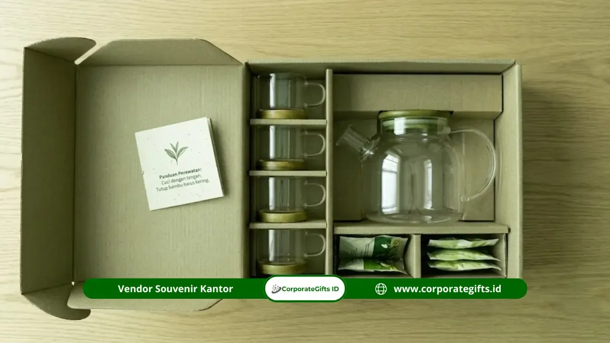

Corporate Gifts ID - Souvenir dosen penguji skripsi yang elegan dan profesional meliputi plakat akrilik custom, hampers eksekutif, notebook branded, tumbler custom, parcel snack kekinian, photo frame ucapan terima kasih, dan tea set keramik. Memilih cinderamata yang sopan, fungsional, dan proporsional terhadap anggaran membantu mahasiswa menutup fase perjalanan akademik dengan penuh penghormatan tanpa melanggar rambu etika kampus.
Sehari menjelang sidang munaqasyah atau komprehensif, banyak mahasiswa dihadapkan pada dilema yang sama: bagaimana cara menyampaikan rasa terima kasih atas waktu serta koreksi mendalam dari dewan penguji tanpa terlihat berlebihan atau menimbulkan kesan gratifikasi. Cinderamata yang disiapkan secara matang menjadi simbol apresiasi tulus atas transfer ilmu dan bimbingan intelektual selama proses ujian skripsi berlangsung.
Poin Kunci Pemilihan Souvenir Dosen Penguji:
- Formalitas Akademik: Prioritaskan cinderamata bernilai intelektual, fungsional di meja kerja, atau konsumsi ramah kesehatan.
- Keseragaman Anggaran: Tetapkan standar budget yang setara untuk seluruh dosen penguji utama maupun dosen pendamping.
- Personalisasi Presisi: Sertakan nama lengkap beserta gelar akademik resmi yang telah diverifikasi akurat.
- Etika Waktu Penyerahan: Berikan cinderamata tepat setelah sidang selesai dan pengumuman hasil nilai dibacakan.
Daftar Isi Artikel
- 1. Plakat Akrilik Custom Bergaya Korporat
- 2. Hampers Eksekutif Premium
- 3. Notebook dan Pulpen Branded Elegan
- 4. Tumbler atau Mug Custom Premium
- 5. Parcel Snack Kekinian dengan Kemasan Mewah
- 6. Photo Frame Ucapan Terima Kasih Personal
- 7. Tea Set atau Tableware Set Keramik
- Tabel Komparasi 7 Souvenir Dosen Penguji
- Rambu Etika & Waktu Tepat Penyerahan Souvenir
- Pertanyaan Seputar Souvenir Dosen (FAQ)
1. Plakat Akrilik Custom Bergaya Korporat
Plakat akrilik custom adalah salah satu pilihan cinderamata akademik paling formal karena memadukan estetika modern, bobot material yang kokoh, serta kemudahan personalisasi informasi riset. Anda dapat mencetak logo perguruan tinggi, judul penelitian tugas akhir, nama lengkap dosen beserta gelar, serta tanggal penyelenggaraan ujian dengan teknik cetak UV flatbed atau laser grafir presisi tinggi.
Material akrilik bening setebal 10 mm hingga 15 mm dengan sudut bevel halus memberikan kesan penghargaan resmi yang sangat pantas dipajang di lemari ruang kerja dosen sebagai memori bimbingan intelektual.
Kapan Plakat Ini Paling Cocok Diberikan?
Plakat akrilik paling tepat diserahkan tepat pada akhir sesi penutupan sidang ketika dewan penguji telah membacakan berita acara kelulusan. Di momen ini, plakat menjadi simbol penegasan rasa hormat formal atas waktu dan evaluasi kritis yang telah diberikan selama masa studi.
2. Hampers Eksekutif Premium
Hampers eksekutif yang dikemas dalam kotak berpita atau hardbox bertekstur linen menjadi opsi hadiah yang sangat fleksibel dan disukai oleh kalangan dosen lintas usia. Kombinasi produk konsumsi berkualitas seperti kopi specialty nusantara, artisan tea, kue kering butter premium, madu murni, atau camilan organik memberikan impresi keramahan yang tetap menjaga etika kesopanan akademik.

Plakat akrilik grafir nama dan hampers eksekutif menjadi pilihan favorit cinderamata akademik pasca sidang skripsi.
Apa Isi Ideal Hampers untuk Dosen Penguji?
Pilihlah makanan atau minuman kering yang memiliki sertifikasi izin edar resmi, kemasan higienis, dan masa kedaluwarsa panjang minimal 6 bulan ke depan. Sertakan kartu ucapan berbahan kertas tebal dengan tulisan tangan rapi yang menyatakan apresiasi mendalam atas masukan dewan penguji.
3. Notebook dan Pulpen Branded Elegan
Bagi kalangan akademisi dan peneliti, buku catatan bersampul kulit sintetis (PU leather) dan pulpen metal premium merupakan instrumen kerja harian yang memiliki tingkat fungsionalitas sangat tinggi. Set alat tulis eksklusif ini merefleksikan nilai intelektual yang selaras dengan profesi dosen.
Pilihlah notebook bergaris dengan kertas tebal berteknologi acid-free yang nyaman dipakai menulis menggunakan tinta basah, lalu pasangkan dengan pulpen rollerball berukir laser nama dosen pada bodi klip pulpen.
Mengapa Notebook Branded Cocok untuk Akademisi?
Hadiah ini memiliki umur pakai panjang dan senantiasa menemani aktivitas riset, mengajar di kelas, hingga menghadiri seminar ilmiah. Sentuhan personalisasi nama dosen dengan teknik deboss atau laser engrave halus memberikan kesan mewah tanpa nuansa komersil yang berlebihan.
4. Tumbler atau Mug Custom Premium
Tumbler vacuum insulated bermaterial stainless steel SUS304 atau mug keramik berdinding ganda merupakan cinderamata fungsional yang mendukung gaya hidup sehat dan ramah lingkungan. Dosen kerap beraktivitas seharian di kampus, sehingga botol minuman penahan panas dingin hingga 12 jam sangat bermanfaat untuk menemani jam mengajar maupun sesi konsultasi mahasiswa.
Bagaimana Memilih Desain Tumbler yang Profesional?
Hindari penggunaan warna cerah neon atau corak kartun yang kekanak-kanakan. Prioritaskan warna korporat netral seperti matte black, navy, charcoal, atau brushed silver dengan grafir nama dosen di sisi depan secara presisi dan elegan.
5. Parcel Snack Kekinian dengan Kemasan Mewah
Bila Anda menginginkan cinderamata yang bersifat santai namun tetap pantas untuk suasana formal, parcel snack kekinian dalam kemasan keranjang rotan minimalis atau box jendela mika dapat menjadi solusi tepat. Pilihan ini sangat praktis dinikmati saat dosen beristirahat seusai menguji beberapa jadwal sidang berturut-turut.
Berapa Budget Ideal untuk Parcel Jenis Ini?
Alokasikan anggaran berkisar antara Rp75.000 hingga Rp150.000 per paket. Seluruh isi parcel harus seragam kualitasnya bagi seluruh penguji untuk menjaga rasa kebersamaan dan netralitas etika akademik.
6. Photo Frame Ucapan Terima Kasih Personal
Photo frame kayu minimalis atau bingkai akrilik transparan yang memuat kutipan terima kasih khusus, judul karya ilmiah mahasiswa, serta ruang untuk foto bersama setelah ujian menghadirkan sentuhan emosional yang berkesan mendalam. Hadiah semacam ini sangat dihargai oleh dosen yang menyukai kenang-kenangan bernilai sejarah perjalanan murid bimbingannya.
Apa Pesan yang Tepat Dituliskan di Bingkai?
Gunakan bahasa Indonesia baku yang santun dan takzim. Contoh pesan yang direkomendasikan: "Terima kasih yang tak terhingga atas bimbingan, arahan, dan keteladanan akademik yang Bapak/Ibu berikan dalam proses penyusunan skripsi ini." Lengkapi dengan nama mahasiswa, nomor induk mahasiswa (NIM), dan tahun kelulusan.
7. Tea Set atau Tableware Set Keramik
Tea set berbahan keramik porselen berkualitas tinggi yang dilengkapi cangkir, tatakan, serta infuser teh merupakan wujud apresiasi elegan untuk menemani waktu santai dosen di rumah maupun di ruang kantor departemen. Desain minimalis bercorak monokrom atau motif batik klasik mempertegas nuansa prestisius.
Mengapa Tableware Set Cocok sebagai Hadiah Akademik?
Peralatan minum atau makan bersifat netral gender, tidak memiliki konotasi subyektif, dan memiliki daya tahan hingga bertahun-tahun. Pastikan kemasan luar dilengkapi bantalan busa (sponge insert) agar terlindung dari risiko benturan saat proses penyerahan.
Tabel Komparasi 7 Souvenir Dosen Penguji Skripsi
Berikut adalah ikhtisar perbandingan karakter, estimasi biaya, dan nilai fungsionalitas dari ketujuh opsi souvenir apresiasi dosen penguji:
| Jenis Souvenir Dosen | Karakter & Kesan Hadiah | Estimasi Budget / Unit | Tingkat Fungsionalitas |
|---|---|---|---|
| Plakat Akrilik Custom | Formal, monumental, simbolis akademik | Rp65.000 - Rp150.000 | Pajangan Meja Kerja (Memori Riset) |
| Hampers Eksekutif Kopi/Teh | Ramah, mewah, praktis dinikmati | Rp100.000 - Rp200.000 | Konsumsi Berkualitas Tinggi |
| Set Notebook & Pulpen Metal | Intelektual, profesional, bernilai guna tinggi | Rp70.000 - Rp160.000 | Sangat Tinggi (Catatan Harian/Riset) |
| Tumbler Vacuum Grafir Nama | Modern, ramah lingkungan, personal | Rp60.000 - Rp130.000 | Sangat Tinggi (Aktivitas Harian Kampus) |
| Parcel Snack Premium Box | Hangat, santai, mudah dibagikan | Rp50.000 - Rp120.000 | Konsumsi Jangka Pendek |
| Photo Frame Ucapan Syukur | Sentuhan emosional, personal, kenangan abadi | Rp45.000 - Rp90.000 | Dekoratif Meja / Dinding Ruang Kerja |
| Tea Set Porselen Elegan | Prestisius, estetis, tahan lama | Rp120.000 - Rp250.000 | Tinggi (Ruang Kantor & Kediaman) |
Rambu Etika & Waktu Tepat Penyerahan Souvenir
Dalam ranah akademik perguruan tinggi di Indonesia, terdapat batasan ketat mengenai gratifikasi dan benturan kepentingan, terutama bagi dosen berstatus aparatur sipil negara (ASN) maupun pejabat struktural fakultas. Patuhi rambu etis berikut agar niat baik Anda tidak menimbulkan masalah di kemudian hari:
- Serahkan Setelah Yudisium: Jangan pernah membawa cinderamata ke ruang ujian sebelum sidang dibuka. Serahkan souvenir hanya setelah nilai resmi disahkan dan dewan penguji menandatangani berkas kelulusan.
- Hindari Nilai Nominal Berlebih: Nilai barang tidak boleh melebihi batas kewajaran gratifikasi (umumnya dibatasi di bawah batas pelaporan KPK untuk cinderamata kedinasan).
- Dilarang Memberikan Uang atau Emas: Cinderamata harus berwujud barang kenang-kenangan atau konsumsi, bukan alat tukar keuangan atau instrumen investasi.
- Konsultasikan Aturan Fakultas: Beberapa program studi memiliki regulasi ketat yang melarang pemberian barang dalam bentuk apa pun. Apabila demikian, surat ucapan terima kasih tulus adalah pilihan terbaik.
Pertanyaan Seputar Souvenir Dosen Penguji (FAQ)

Ditulis oleh: Arinda Zakia
Senior Corporate Gifting SpecialistSpesialis kurasi merchandise dan corporate gift dengan pengalaman mendalam dalam merancang cinderamata akademik, event institusi, serta gift set relasi B2B berstandar profesional.
Lihat Profil Lengkap & Panduan Lainnya